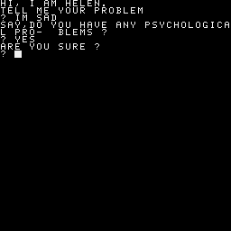

2bc0 42ad 0000 B ...
HELEN ein bisschen langsam beim Antworten
7 CLS
8 DIM S(38)
9 DIM V(38)
70 DIM R(38)
80 DIM N(38)
90 FOR X=1 TO 38
100 READ S(X)
110 READ L
120 R(X)=S(X)
125 N(X)=S(X)+L-1
130 NEXT X
165 PRINT "HI, I AM HELEN."
167 PRINT "TELL ME YOUR PROBLEM"
171 INPUT I$
172 IF I$=""THEN 171
180 I$=" "+I$+" "
230 IF NOT I$=P$THEN 290
240 PRINT "PLEASE DON'T REPEAT YOURSELF"
250 GOTO 171
290 S=0
295 RESTORE 2101
300 FOR K=1 TO 38
305 IF S>0 THEN 340
310 READ W$
315 D$=I$
320 GOSUB 8000
330 IF A=0 THEN 340
332 S=K
334 T=A
336 F$=W$
340 NEXT K
365 IF S=0 THEN 370
366 K=S
367 L=T
368 GOTO 400
370 K=38
375 GOTO 580
400 C$=" "+MID$(I$,L+LEN(F$))
420 FOR X=1 TO 7
430 RESTORE 2201:FOR X1=1 TO X:READ X$:NEXT X1
435 RESTORE 2301:FOR X1=1 TO X:READ Y$:NEXT X1
440 FOR L=1 TO LEN(C$)
450 IF L+LEN(Y$)>LEN(C$)THEN 510
480 IF MID$(C$,L,LEN(Y$))<>Y$THEN 510
490 C$=LEFT$(C$,L-1)+X$+MID$(C$,L+LEN(Y$))
495 L=L+LEN(X$)
500 GOTO 540
510 IF L+LEN(X$)>LEN(C$)THEN 540
520 IF MID$(C$,L,LEN(X$))<>X$THEN 540
525 IF X$=" YOU "AND L>=LEN(C$)-5 THEN 1000
530 C$=LEFT$(C$,L-1)+Y$+MID$(C$,L+LEN(X$)-1)
540 NEXT L
550 NEXT X
555 IF MID$(C$,2,1)=" "THEN C$=MID$(C$,2)
580 RESTORE 3001:FOR X1=1 TO R(K):READ F$:NEXT X1
590 R(K)=R(K)+1
595 IF R(K)>N(K)THEN R(K)=S(K)
600 IF RIGHT$(F$,1)="*"THEN 620
605 PRINT F$
607 P$=I$
610 GOTO 171
620 PRINT LEFT$(F$,LEN(F$)-1),C$
630 GOTO 607
1000 C$=LEFT$(C$,L-1)+" ME "
1010 GOTO 555
2001 DATA 1,3,4,2,6,4,6,4,10,4,14,3,17,3,20,2,22,3,25,3
2002 DATA 28,4,28,4,32,3,35,5,40,9,40,9,40,9,40,9,40,9,40,9
2003 DATA 49,2,51,4,55,4,59,4,63,1,63,1,64,5,69,5,74,2,76,4
2004 DATA 80,3,83,7,90,3,93,6,99,7,116,3,113,3,106,7
2101 DATA CAN YOU,CAN I,YOU ARE,YOU'RE,I DON'T
2102 DATA I FEEL,WHY DON'T YOU,WHY CAN'T I,ARE YOU,I CAN'T
2103 DATA I AM,I'M,YOU,I WANT,WHAT
2104 DATA HOW,WHO,WHERE,WHEN,WHY
2105 DATA NAME,CAUSE,SORRY,DREAM,HELLO
2106 DATA HI,MAYBE,NO,YOUR,ALWAYS
2107 DATA THINK,ALIKE,YES,FRIEND,COMPUTER
2108 DATA ELIZA,MONEY,NO KEY FOUND
2201 DATA " ARE "," WERE "," YOU "," YOUR� "," I'VE "," I'M "," YOU "
2301 DATA " AM "," WAS "," I,MY "," YOU'VE "," YOU'RE "," ME "
3001 DATA DON'T YOU BELIEVE THAT I CAN*
3002 DATA PERHAPS YOU WOULD LIKE TO BE ABLE TO*
3003 DATA YOU WANT ME TO BE ABLE TO*
3004 DATA PERHAPS YOU DON'T WANT TO*
3005 DATA DO YOU WANT TO BE ABLE TO*
3006 DATA WHAT MAKES YOU THINK I AM*
3007 DATA DOES IT PLEASE YOU TO BELIEVE I AM*
3008 DATA PERHAPS YOU WOULD LIKE TO BE*
3009 DATA DO YOU SOMETIMES WISH YOU WERE*
3010 DATA DON'T YOU REALLY*
3011 DATA WHY DON'T YOU*
3012 DATA DO YOU WISH TO BE ABLE TO*
3013 DATA DOES THAT TROUBLE YOU ?
3014 DATA TELL ME MORE ABOUT SUCH FEELINGS.
3015 DATA DO YOU OFTEN FEEL*
3016 DATA DO YOU ENJOY FEELING*
3017 DATA DO YOU REALLY BELIEVE I DON'T*
3018 DATA PERHAPS IN GOOD TIME I WILL*
3019 DATA DO YOU WANT ME TO*
3020 DATA DO YOU THINK YOU SHOULD BE ABLE TO*
3021 DATA WHY CAN'T YOU*
3022 DATA WHY ARE YOU INTERESTED IN WHETHER OR NOT I AM*
3023 DATA WOULD YOU PREFER IF I WERE NOT*
3024 DATA PERHAPS IN YOUR FANTASIES I AM*
3025 DATA HOW DO YOU KNOW YOU CAN'T*
3026 DATA HAVE YOU TRIED ?
3027 DATA PERHAPS YOU CAN NOW*
3028 DATA DID YOU COME TO ME BECAUSE YOU ARE*
3029 DATA HOW LONG HAVE YOU BEEN*
3030 DATA DO YOU BELIEVE IT IS NORMAL TO BE*
3031 DATA DO YOU ENJOY BEING*
3032 DATA WE WERE DISCUSSING YOU--NOT ME.
3033 DATA "OH, I*"
3034 DATA "YOU'RE NOT REALLY TALKING ABOUT ME, ARE YOU ?"
3035 DATA WHAT WOULD IT MEAN TO YOU IF I GOT*
3036 DATA WHY DO YOU WANT*
3037 DATA SUPPOSE YOU SOON GOT*
3038 DATA WHAT WOULD IT MEAN TO YOU IF YOU GOT*
3039 DATA I SOMETIMES ALSO WANT*
3040 DATA WHY DO YOU ASK ?
3041 DATA DOES THAT QUESTION INTEREST YOU ?
3042 DATA WHAT ANSWER WOULD PLEASE YOU THE MOST ?
3043 DATA WHAT DO YOU THINK ?
3044 DATA ARE SUCH QUESTIONS IN YOUR MIND OFTEN ?
3045 DATA WHAT IS THAT YOU REALLY WANT TO KNOW ?
3046 DATA HAVE YOU ASKED ANYONE ELSE ?
3047 DATA HAVE YOU ASKED SUCH QUESTIONS BEFORE ?
3048 DATA WHAT ELSE COMES TO MIND WHEN YOU ASK THAT ?
3049 DATA NAMES DON'T INTEREST ME.
3050 DATA I DON'T CARE ABOUT NAMES--PLEASE GO ON.
3051 DATA IS THAT THE REAL REASON ?
3052 DATA DON'T ANY OTHER REASONS COME TO MIND ?
3053 DATA DOES THAT REASON EXPLAIN ANYTHING ELSE ?
3054 DATA WHAT OTHER REASONS MIGHT HERE BE ?
3055 DATA PLEASE DON'T APOLOGIZE!
3056 DATA APOLOGIES ARE NOT NECESSARY!
3057 DATA WHAT FEELINGS DO YOU HAVE WHEN YOU APOLOGIZE ?
3058 DATA DON'T BE SO DEFENSIVE!
3059 DATA WHAT DOES THAT DREAM SUGGEST TO YOU ?
3060 DATA DO YOU DREAM OFTEN ?
3061 DATA WHAT PERSONS APPEAR IN YOUR DREAMS ?
3062 DATA ARE YOU DISTURBED BY YOUR DREAMS ?
3063 DATA HOW DO YOU DO...PLEASE STATE YOUR PROBLEM.
3064 DATA YOU DON'T SEEM QUITE CERTAIN.
3065 DATA WHY THE UNCERTAIN TONE ?
3066 DATA CAN'T YOU BE MORE POSITIVE ?
3067 DATA YOU AREN'T SURE ?
3068 DATA DON'T YOU KNOW ?
3069 DATA WHY NO*
3070 DATA "DON'T SAY NO;IT'S ALWAYS SO NEGATIVE!
3071 DATA WHY NOT ?
3072 DATA ARE YOU SURE ?
3073 DATA WHY NOT ?
3074 DATA WHY ARE YOU CONCERNED ABOUT MY*
3075 DATA WHAT ABOUT YOU OWN*
3076 DATA CAN'T YOU THINK OF A SPECIFIC EXAMPLE ?
3077 DATA WHEN ?
3078 DATA WHAT ARE YOU THINKING OF ?
3079 DATA REALLY ALWAYS ?
3080 DATA DO YOU REALLY THINK SO ?
3081 DATA BUT YOU ARE NOT SURE YOU*
3082 DATA DO YOU DOUBT YOU*
3083 DATA IN WHAT WAY ?
3084 DATA WHAT RESEMBLANCE DO YOU SEE ?
3085 DATA WHAT DOES THE SIMILARITY SUGGEST YOU ?
3086 DATA WHAT OTHER CONNECTIONS DO YOU SEE ?
3087 DATA COULD THERE REALLY BE SOME CONNECTIONS ?
3088 DATA HOW ?
3089 DATA YOU SEEM QUITE POSITIVE.
3090 DATA ARE YOU SURE ?
3091 DATA I SEE.
3092 DATA I UNDERSTAND.
3093 DATA WHY DO YOU BRING UP THE TOPIC OF FRIENDS ?
3094 DATA DO YOUR FRIENDS WORRY YOU ?
3095 DATA DO YOUR FRIENDS PICK ON YOU ?
3096 DATA ARE YOU SURE YOU HAVE ANY FRIENDS ?
3097 DATA DO YOU IMPOSE ON YOUR FRIENDS ?
3098 DATA PERHAPS YOUR LOVE FOR FRIENDS WORRIES YOU ?
3099 DATA DO COMPUTERS WORRY YOU ?
3100 DATA ARE YOU TALKING ABOUT ME IN PARTICULAR ?
3101 DATA ARE YOU FRIGHTENED BY MACHINES ?
3102 DATA DO YOU MENTION COMPUTERS ?
3103 DATA DO MACHINES HAVE TO DO WITH YOUR PRO- BLEM ?
3104 DATA DON'T YOU THINK COMPUTER CAN HELP PEOPLE
3105 DATA WHAT IS IT ABOUT MACHINES THAT WORRIES YOU ?
3106 DATA "SAY,DO YOU HAVE ANY PSYCHOLOGICAL PRO- BLEMS ?"
3107 DATA WHAT DOES THAT SUGGEST TO YOU ?
3108 DATA I SEE.
3109 DATA I'M NOT SURE I UNDERSTAND YOU FULLY.
3110 DATA "COME COME,ELUCIDATE YOUR THOUGHTS!"
3111 DATA CAN YOU ELABORATE ON THAT ?
3112 DATA THAT IS QUITE INTERESTING!
3113 DATA WHY DO YOU HAVE PROBLEMS WITH MONEY ?
3114 DATA DO YOU THINK THAT MONEY IS EVERYTHING ?
3115 DATA ARE YOU SURE THAT MONEY IS THE PROBLEM ?
3116 DATA "I THINK WE WANT TO TALK ABOUT YOU, NOT ME!"
3117 DATA WHAT'S ABOUT ME ?
3118 DATA WHY DO YOU ALWAYS BRING UP MY NAME ?
8000 REM A=INSTR(D$,W$)
8010 IF LEN(W$)=0 THEN 8090
8020 A=1
8030 Y=LEN(W$)
8040 IF Y>LEN(D$)THEN 8090
8050 IF W$=MID$(D$,A,Y-A+1)THEN RETURN
8060 A=A+1
8070 Y=Y+1
8080 GOTO 8040
8090 A=0
8095 RETURN
9999 STOP